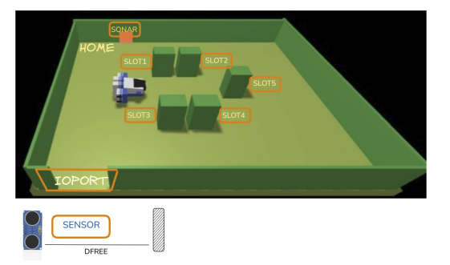

Luigi

Riccardo

Simone

Questo documento descrive il lavoro svolto nello Sprint 1 per lo sviluppo del sistema cargoservice.
L'obiettivo principale di questo incremento è l'implementazione della logica di controllo centrale del servizio (l'orchestratore QActor cargoservice) e il superamento dell'Abstraction Gap per il pilotaggio del robot virtuale RobotSmart26.
A Maritime Cargo shipping company (from now on, simply company) intends to automate the operations of load of containers in the ship’s cargo hold (or simply hold). To this end, the company plans to employ a Differential Drive Robot (from now, called cargorobot).
The hold is a rectangular, flat area with an Input/Output port (IOPort). The area provides 4 slots to store the containers and a slot named slot5.

In the picture above:
The company asks us to build service named cargoservice that should work as follows.
The cargoservice is able to receive a request to load a container sent by some customer by using the pushbutton of the IOPort.
retrylater, if the IOPort is currently occupied by a container or if the system is Out of serviceslots1-4 are already occupied.When the request to load is accepted, the customer must move the container in the sensor area within prefixed amount of time (e.g. 30 secs), otherwise the systems becomes disengaged. Then, the cargoservice uses the cargorobot to move the container from the IOPort to the slot5 (for marking the container) and then to the reserved slot.
The service must also show on the display on the IOPort:
Nello Sprint 0 sono state chiarite le entità e mappate sui concetti formali di QActor, Contesto e Messaggi. La struttura a 3 contesti definita nello Sprint 0 rimane la nostra architettura logica di riferimento. In questo sprint implementeremo i primi due attori reali (cargoservice e cargorobot) mantenendo mockati gli input distribuiti (sonar e led) e l'interfaccia utente (WebGUI).
L'orchestratore deve memorizzare se ciascuno dei quattro slot di stoccaggio (slots1-4) è libero o occupato, oltre ad attendere la marcatura nello slot5. Poiché questo stato è puramente informativo e interno alla logica di business di cargoservice, viene modellato come un insieme di variabili booleane all'interno dello stato dell'attore QActor cargoservice (es. Slot1Occupied, Slot2Occupied, ecc.). Non vi è la necessità architetturalmente di introdurre un QActor separato per la stiva.
Il robot virtuale RobotSmart26 (che risiede nel contesto esterno ctxrobotsmart alla porta 8020) risponde a comandi cartesiani e di basso livello. Le nostre tappe logiche sono definite come costanti nominali: ioport, slot5, slot1, slot2, slot3, slot4 e home. Esiste un evidente abstraction gap tra queste destinazioni semantiche e i comandi cartesiani richiesti dal robot.
Questo divario viene risolto all'interno del QActor cargorobot, che funge da driver di traduzione. Il cargorobot mantiene internamente una mappatura statica per tradurre le posizioni logiche in coordinate reali (X, Y) all'interno della griglia della stanza virtuale:
home → (0,0)ioport → (4,0)slot5 → (4,3)slot1 → (1,1)slot2 → (1,4)slot3 → (3,2)slot4 → (3,4)Quando riceve la richiesta move_robot(DEST) da cargoservice, il `cargorobot` traduce `DEST` nelle coordinate corrispondenti e invia al `RobotSmart26` la richiesta formale di movimento:
Request moverobot : moverobot(TARGETX, TARGETY, STEPTIME)
Il `cargorobot` attende la risposta del robot (moverobotdone o moverobotfailed) e risponde a sua volta a `cargoservice` con il risultato della movimentazione.
Le interazioni coinvolgono attori distribuiti su diversi nodi di rete. La comunicazione tra l'orchestratore e il driver del robot avviene tramite uno schema Request-Reply sincrono, in modo da bloccare la logica fino all'effettivo completamento del movimento fisica. La marcatura del container sullo slot5 viene invece attivata tramite un messaggio asincrono di Dispatch (start_marking) e notificata di ritorno tramite un Dispatch di risposta (marking_done).
Per validare la correttezza del comportamento del sistema nello Sprint 1, dobbiamo definire dei test automatizzati che avviino il sistema e simulino l'interazione del cliente. I test saranno scritti in Kotlin/Java tramite JUnit 4.
cargoservice registra che gli slot da 1 a 4 sono occupati.load tramite CoAP.retrylater o reject senza attivare la movimentazione robotica.
load a stiva vuota. Si verifica che la risposta indichi lo slot assegnato (es. slot1). Si simula il rilevamento del container inviando il messaggio del sonar. Si osserva (via CoAP) che il robot esegua la sequenza completa e ritorni in home, occupando lo slot1.
La progettazione e l'implementazione reale del codice dello Sprint 1 sono disponibili nei seguenti file:
I test automatici JUnit sono stati eseguiti con successo. L'output del comando ./gradlew test conferma che tutti i test JUnit definiti (Happy Path e rifiuto stiva piena) passano regolarmente, validando la logica dello Sprint 1.
> Task :test test.kotlin.TestSprint1 > testHappyPath PASSED BUILD SUCCESSFUL in 10s
Per eseguire il sistema nello Sprint 1:
8020.sprint1 ed eseguire il comando ./gradlew run per avviare il servizio principale.(N/A per Sprint 1)